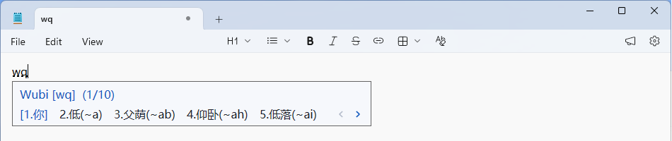
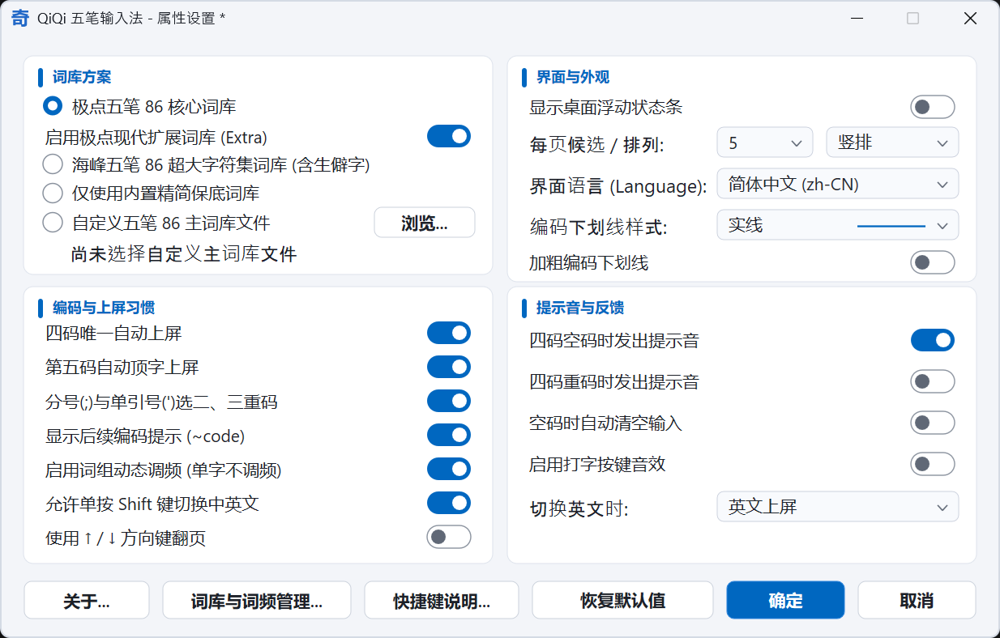
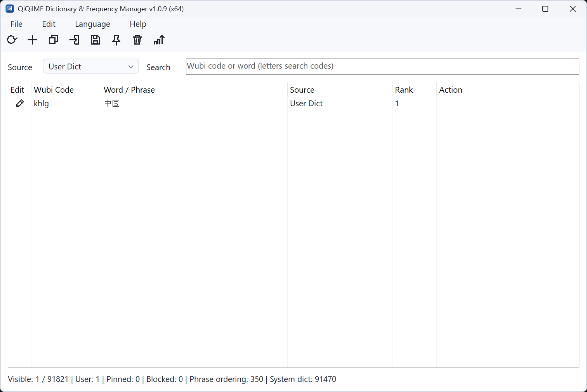

熟悉的五笔节奏
五笔 86 编码，支持可选的四码唯一上屏、第五码顶字、后续编码提示和临时英文输入。
开源 · 五笔 86 · Windows
奇奇五笔是一款基于 C++ 与 Windows 原生 TSF 构建的输入法。延续五笔 86 的输入习惯，让词库、候选与输入体验由你掌握。
Windows 10 22H2 / Windows 11 · x64 与 x86 · GPL-3.0-or-later
给表达，留一点空间
你好，世界。
wq
01 / THE ESSENTIALS
保留顺手的输入习惯，也照顾每个人不同的细节。
五笔 86 编码，支持可选的四码唯一上屏、第五码顶字、后续编码提示和临时英文输入。
极点、海峰或自定义主词库自由选择。通过独立工具管理用户词条、置顶候选、导入导出与备份。
原生 TSF 集成，横竖排候选、跟随系统的主题与高 DPI 支持。宿主兼容情况与限制公开记录。
02 / IN ACTION
真实软件截图，点击图片查看大图。候选窗为局部截图，界面语言与选项以实际版本和设置为准。

记事本中的候选窗局部截图，展示 wq 编码、候选翻页和后续编码提示。

在一个设置窗口中选择词库、候选排列、上屏习惯和提示反馈。

词库管理器展示示例词条“中国”的五笔编码、来源和排序。
LOCAL FIRST
五笔查询在本机完成，不依赖云输入服务，也不自动上传遥测。词库的本机共享权限与诊断导出边界均有明确说明。
03 / GET INVOLVED